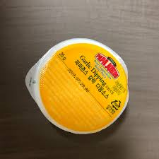

My location
I live in south korea which many people want to travel in.
My hobby
I really enjoy playing computer games such as rpg or shootings.
If you want to join with me, send me a message to discuss time we can make!
My dream
I want to be a programmer who can make contributions to opensource communities.
What is your dream? and why do you follow that dream?
My favorite food
Hmm... Actually, it is so difficult topic that there are many foods that I like...
One of my choices is... pizza? I really like it because it have many kinds of ingredients
and favors which make me pleased. when I eat special galic sauce on it, it is really delicious.
actually, I am very starving now...

his is best sauce what I ever had
My family
My family is mom, dad, my youngerbrother. At the moment, My brother takes call of duty.
Therefore, my family is look forward to see him as soon as possible. However, thesedays,
There is an epidemic called corona that everyone is afraid of. We have to understand this
severe situation and prepare other more serious illnesses.